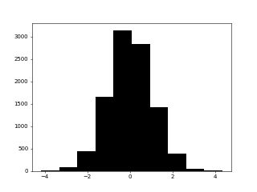

Image Classification of Probability Distributions
Preliminary Idea
TL;DR
I make a Convolutional Neural Network that can classify images of histograms into seven levels of skew: severe left, moderate left, mild left, normal,
mild right, moderate right, and severe right with a 94.81% accuracy.
Initial Thoughts
One word of warning: this section will be very long and will mostly just outline the problem and go through my thought process for how to solve it. If you
are interested in seeing how I approach solving problems like these, it might be an interesting read. However, if you’re just here to see the algorithms
and statistics, feel free to skip down to here.
I’m writing this portion of the project prior to starting it. I figured it would be a good idea to capture my thoughts on how I plan on making this project
work to be able to contrast how it actually ends up working. Hopefully this should be good fun to read for the AI veterans who will likely already know the
hubris of this plan, and it’s a good way to document the naïve optimism of a simple data science enthusiast with delusions of grandeur. As I am sure those
will be promptly burned to ashes, I recommend bringing marshmallows.
So enough with my weird self-detrimental style of humor, what’s the idea? In two words: distribution classification. I plan on using TensorFlow to create an
image classifier that will identify the distribution of a dataset based on its histogram. At the end of it, I am hoping I can give it a histogram of any
distribution at all, and it will tell me whether it is normally distributed or skewed to some degree in some direction.
So I guess the first question is: why? What value does a distribution identification AI give us, especially when statistical tests already exist for such
things (e.g. Anderson-Darling test for normality)?
Well for starters, the Anderson-Darling test for normality is very good at its job. Some argue that it may be too good for some purposes. Most if not all
statistical tests have an inherent amount of power based on sample size and various other factors. This means that the larger the sample size, the more
likely a test will be able to identify a deviation from the null hypothesis, no matter how small. In most cases, this is a good thing, as it reduces the
probability of having a type II error. However, for distribution identification, this may not be for the best. Some of the most common and useful
statistical tests are parametric and rely on the dataset to be normally distributed. However, some distributions are functionally normal, meaning that they
may have slight deviations from the normal distribution, but they will work just fine for most statistical tests. The issue here is if I have a few
thousand data points (or millions, as many data science problems have), the power of the Anderson-Darling test will be so high that only the most pristine,
beautifully normal datasets will make the cut. For example, the following image shows a distribution that fails the Anderson-Darling test at the 95%
confidence level, and it only has 1000 measurements.
So all that to be said that my hope and dream for this AI is that it is worse at identifying distributions than the normally used statistical techniques.
All jokes aside, my inspiration for this comes from how the assumptions for linear regression are normally assessed. It’s rare to actually apply an actual
normality test to the residuals of a model. Often if we do anything at all, we look at the histogram or the normality plot and say, “yeah, that’s about
right” and go from there. In the figure above, I'd be ecstatic to have such a nice looking dataset.
The second reason is I have plans for an AI equivalent to the Johnson transformation, and I think it would be interesting to have it be able to assess its
own work by looking at the histograms it creates.
Potential Pitfalls
So before even starting this project, I see a few obstacles I’m going to have to get around. The first is converting the image into something useable. All
the “hello world” level image identification projects use tiny thumbnail sized pictures with so few pixels even that I have difficulty classifying them. Is
that a shoe, some pants, bigfoot? Who knows? (Actually, I guess the AI knows . . .).
The main benefit of this is the neural network only needs a few dozen or so input neurons instead of 250,000. This significantly improves the efficiency of
the model and reduces the chances of some overfitting issues. Because the universe is rarely as generous as Keras when it comes to providing easily usable
datasets, I will need to figure out a way to handle larger images. I know there are plenty of ways to do this, so I will just need to figure out which one
does so without throwing away too much information. My initial thoughts include partitioning each image into smaller, easier to use sections, though I’m
also wondering if I can find a way to convert each image into relative bar height and location, as I imagine most of the actual pixel data in the
histograms will be redundant for an AI.
Another issue I foresee is developing the training set. More specifically, where to store it. Image classification can require massive training sets to get
a good fit, and I don’t have space on my computer for 20,000 or more jpgs of various distributions. I may have to figure out compressing the images, using
alternative formats, or even creating each image and then immediately destroying it after training, though I imagine that would be unusably slow.
This is less of an obstacle and more of a decision, but I need to figure out how I will be actually creating these thousands of histograms. I suppose the
easiest would be to use any one of the various methods that Python, R, and Excel have to create various distributions. One alternative would be to simply
make three very large datasets, one right-skewed, one left-skewed, and one normal. Then, I could simply leverage the central limit theorem and create
variously skewed datasets.
That second option actually might have some benefits to it. You see, I’m planning on breaking this out into stages. The initial AI’s output will be
entirely binary, either normal or not normal. The second stage will be a little more specific, and will output skewed left, skewed right, or normal. If I’m
daring, I may even include some adverbs in there (e.g. mildly, moderately, severely). Creating datasets for this purpose would actually be quite easy.
For example, if I wanted to make a bunch of moderately right-skewed data, I could simply take a bunch of n = 5 samples from the severely right-skewed data.
Then, if I wanted mildly right-skewed data, I could take a bunch of n = 10 or so right-skewed data samples. If I wanted to go the extra mile, I could even
perform an Anderson-Darling test on each of them to verify they are not normally distributed in case it isn’t obvious from the histograms.
Creating the Data
OK, enough stalling. Data science is quite challening without the former, so we need to create a dataset. Because image classification takes a bit of work,
we are going to need somewhere in the thousands of images at least. I don't know of any online sources for such a dataset, so I will try to make one
myself.
First let's get all the imports out of the way. Here is everything I will end up using for this project.
import tensorflow as tf
from tensorflow import keras
import matplotlib.pyplot as plt
import numpy as np
from random import sample
from statistics import mean
from cv2 import imread, imwrite, imshow, waitKeynormal = list(np.random.normal(0, 1, 10000))
severe_left_skew = list(np.random.beta(7, 1, 10000))
severe_right_skew = list(np.random.f(2, 50, 10000))skew_list = [('severe_left', severe_left_skew, 2),
('moderate_left', severe_left_skew, 5),
('mild_left', severe_left_skew, 8),
('normal', normal, 1),
('mild_right', severe_right_skew, 60),
('moderate_right', severe_right_skew, 30),
('severe_right', severe_right_skew, 8)]So I can create the histograms, now I have to convert them into images, read them into numpy arrays, store all of them in a file so I don't have to keep recreating the set, and then make sure the data can be loaded back in a tensorflow-friendly manner.
One other thing that we need to figure out is storage. I don't have room on my computer for 50 GB of jpgs, and I don't want to accidentally use up all of my storage. Seeing how I will likely need hundreds to thousands of images, I need to make sure I'm careful. Let's look at how much space one histogram takes up.
So this is a 100 dpi image and takes up about 11.3 kB. If I used this size, I would expect to be running through 11 or so MB of data per 1000 images, which I imagine would be fairly slow. Let's see what we can do to drop this down.
Converting to black and white saves me a kB and also will probably be more useful for the neural network. Win win.

Dropping down the image size also helps significantly. This image is only 3.77 kB. I doubt the neural network needs to worry about those axes either, so let's see what happens when we drop them.
This "clean" figure is only 1.04 kB, meaning the axes account for more memory than the histogram itself! I guess the only question now is how small do I want to make these figures? I could drop them down to 5 DPI if I wanted, but at what point do we start losing something important? One thing I am thinking about is how we probably won't get a very good model by looking at each individual pixel. A more common way to do image classification is to run grids across the image to capture larger features. Since I am going to have seven categories, let's choose a size that gives an x-axis that is divisible by seven.
So this bad boy is 23 DPI, 577 bytes, and 147 pixels wide. This means we could break this image into seven columns 21 pixels wide. Consider a scenario where you were shown a single column and were told where on the picture that column came from. I think from that information alone, you could at least discern whether the graph was skewed left, right, or normal.
dist_train_data = []
dist_test_data = []
for i in range(100):
fig = plt.hist([mean(sample(severe_right_skew, 8)) for s in range(300)], bins=20, color='black')
plt.axis('off')
plt.savefig('hist.png', dpi=23)
img = imread('hist.png', 0)
print(i)
if i <= 10:
dist_test_data.append(['severe_right', img])
else:
dist_train_data.append(['severe_right', img])
np.savez('dist_data/dist_train_data_6.npz', *dist_train_data)
np.savez('dist_data/dist_test_data_6.npz', *dist_test_data)Later I would combine each of these .npz files into larger training and test datasets.
train_labels = []
train_imgs = []
test_labels = []
test_imgs = []
for i in range(7):
print(i)
dist = np.load('dist_data/dist_train_data_' + str(i) + '.npz', allow_pickle = True)
for key in dist:
train_labels.append(dist[key][0])
train_imgs.append(dist[key][1])
for i in range(7):
print(i)
dist = np.load('dist_data/dist_test_data_' + str(i) + '.npz', allow_pickle = True)
for key in dist:
test_labels.append(dist[key][0])
test_imgs.append(dist[key][1])
np.savez('dist_train_imgs.npz', *train_imgs)
np.savez('dist_train_lbls.npz', *train_labels)
np.savez('dist_test_imgs.npz', *test_imgs)
np.savez('dist_test_lbls.npz', *test_labels)OK, so now I have a dozen or so pickles and four full datasets! Well sort of . . . there's still some final touches we need to get this data in a usable state.
# Converting categories to numeric values
label_dict = {'severe_left': 0, 'moderate_left': 1, 'mild_left': 2, 'normal': 3,
'mild_right': 4, 'moderate_right': 5, 'severe_right': 6}
# Creating each dataset, making sure to change labels to numbers.
train_imgs = np.load('dist_train_imgs.npz')
ni_keys = [ni_key for ni_key in train_imgs]
train_data = np.array([train_imgs[ni_keys[i]] for i in range(len(ni_keys))])
train_labels = np.load('dist_train_lbls.npz')
nl_keys = [nl_key for nl_key in train_labels]
train_lbls = np.array([label_dict[str(train_labels[nl_keys[i]])] for i in range(len(nl_keys))])
test_imgs = np.load('dist_test_imgs.npz')
ti_keys = [ti_key for ti_key in test_imgs]
test_data = np.array([test_imgs[ti_keys[i]] for i in range(len(ti_keys))])
test_labels = np.load('dist_test_lbls.npz')
tl_keys = [tl_key for tl_key in test_labels]
test_lbls = np.array([label_dict[str(test_labels[tl_keys[i]])] for i in range(len(tl_keys))])
# reshaping data to have a color dimension of 1
train_data = np.reshape(train_data, (623, 110, 147, 1)).astype('float32') / 255
test_data = np.reshape(test_data, (77, 110, 147, 1)).astype('float32') / 255The Model
OK, so there are a bunch of ways to go about doing this, but I am going to touch on two of them. The first is to try to use dense layers to connect individual pixels to the final output. There are many issues with that, including major inefficiencies and the inability to capture larger features. I went ahead and ran a dense layer for the fun of it, and the test results were 80% accurate.
model = keras.Sequential([
keras.layers.Flatten(),
keras.layers.Dense(512, activation = 'relu'),
keras.layers.Dense(256, activation = 'relu'),
keras.layers.Dense(7, activation = 'softmax')
])
model.compile(optimizer = 'adam',
loss = keras.losses.SparseCategoricalCrossentropy(),
metrics = ['accuracy'])
model.fit(train_data, train_lbls, epochs = 5, batch_size = 32)
model.evaluate(test_data, test_lbls)So the main thing here is that the model reached 98% accuracy pretty rapidly for the training set, but it wasn't nearly as successful with the test data. For these kinds of figures, as simple as they are, I would expect a better job overall. This is a common issue with dense layers in image classification, and so most people use alternatives like the Convolutional Neural Networks.
model = keras.Sequential([
keras.layers.Conv2D(64, 21, activation = 'relu', input_shape = (110, 147, 1)),
keras.layers.Conv2D(21, 7, activation = 'relu', input_shape = (110, 147, 1)),
keras.layers.Flatten(),
keras.layers.Dense(7, activation = 'softmax')
])
model.compile(optimizer = 'adam',
loss = keras.losses.SparseCategoricalCrossentropy(),
metrics = ['accuracy'])
model.fit(train_data, train_lbls, epochs = 5, batch_size = 32)
model.evaluate(test_data, test_lbls)Now that's more what I'm talking about! At 95%, our model is doing about as well as most statistical tests, so I certainly can't complain.
Post Mortem
So there we have it, a quick little project to create an AI that can identify the level of skew in a distribution based on an image of its histogram.
Despite everything, I did learn a few good points here.
I think the biggest thing is honestly that I need to work on a more efficient setup for my work. Most of the work I've done in Python has been through
desktop IDEs like PyCharm. These are great for creating programs that sort image pixels in a spiraling pattern from the center, but they don't really work
very well for machinge learning projects, especially when you have to rerun specific blocks of code over and over again. I really feel I should have used a
Jupyter notebook for this or any other cell-based system.
I did still end up running into the pitfalls I feared, but they weren't too bad to get out of. The memory problem was the largest issue, and I do need to
find better routes for future, more complex projects. I could also consider using my better computer for this, but I would like to work on optimizations
first.
I will try to figure out some better techniques and apply them to the next project (maybe even a follow-up project?). Regardless, I feel like this was a
nice success, and I hope you enjoyed reading it.